zoom redesign
exploring ways to improve the user experience of the zoom video conferencing platform
overview
During the Spring 2021 semester I completed DESINV 25, a course focused on User Experience Design. We were randomly assigned a tool created before the pandemic and asked to re-design it for users who relied on it more because of COVID-19. I was assigned Zoom, and interviewed new users about their experiences with the platform.
research
To learn more about the wide range of Zoom users, I created an interview guide to help structure conversations with people affected by the shift from in-person to virtual work and school.
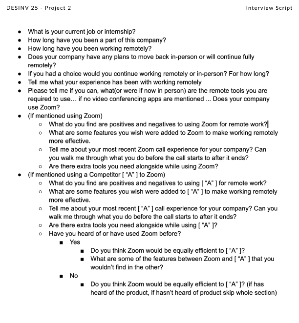
I interviewed two people — one who was interning virtually, and another whose job involved interacting with children. Both were new Zoom users navigating the shift to remote environments.
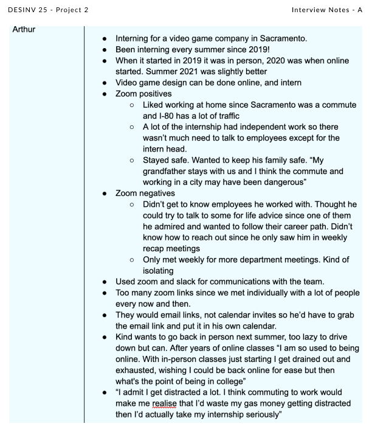
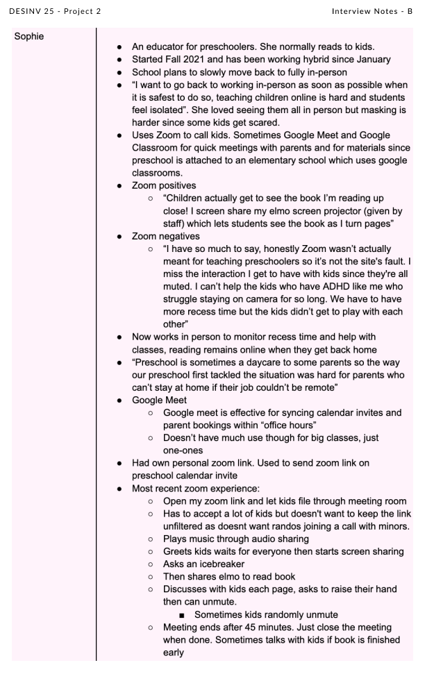
synthesis
I combined both interviews into a shared empathy map — "Sophie" in pink, "Arthur" in blue, and their overlapping insights in purple. The four quadrants cover what they said, thought, felt, and did when interacting with Zoom and their virtual environments.
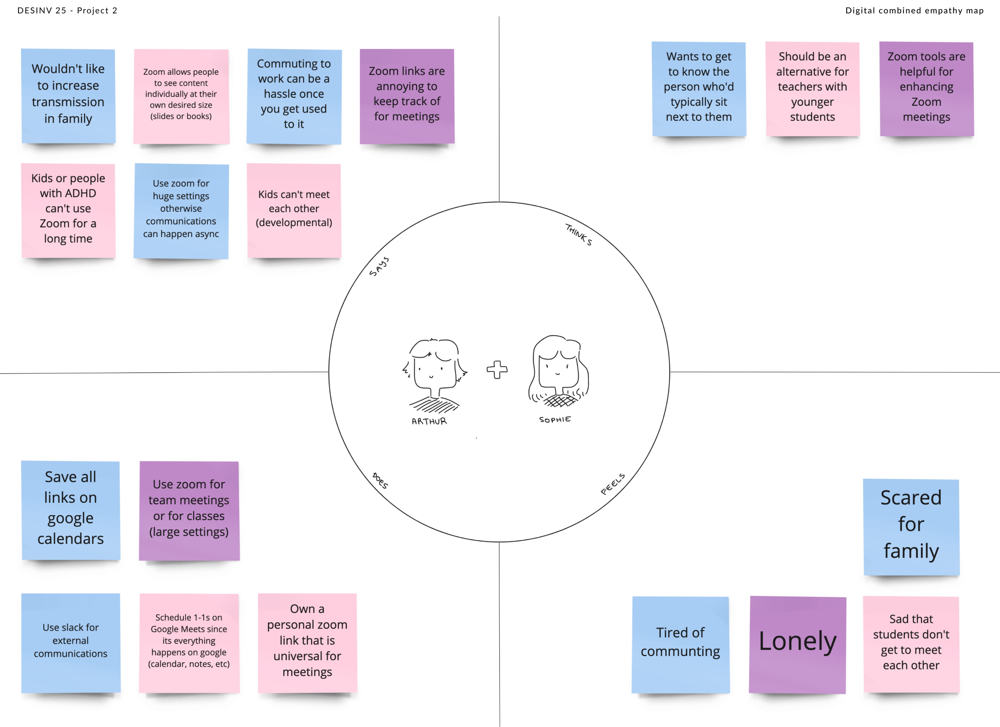
From the interviews I developed needs statements, filling in a structured template with what I learned about each user.
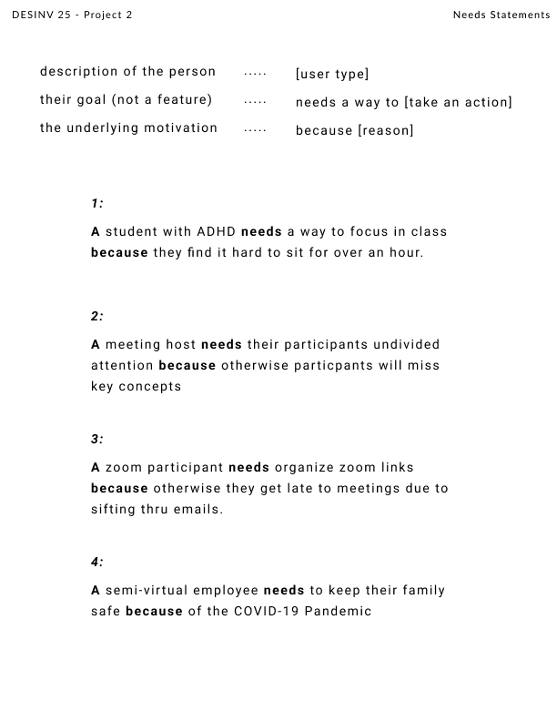
I then built a persona chart based on the combined needs, with a focus on student interactions with Zoom.
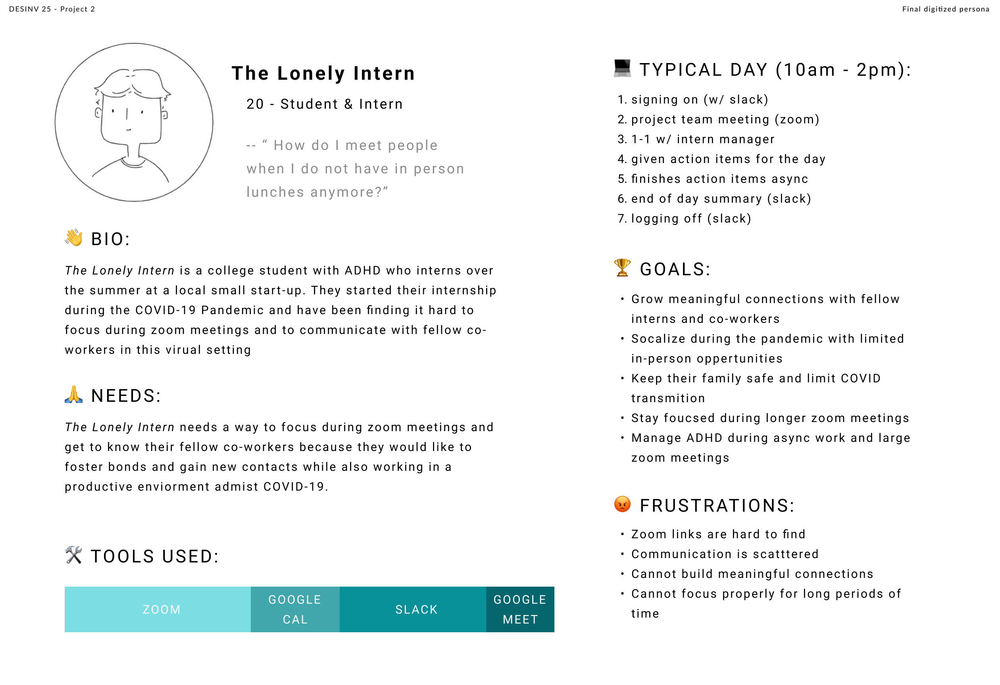
ideation
After understanding my users, I decided to focus on helping Zoom hosts and participants manage meeting length and prioritize mental health. My solution: a built-in break feature for Zoom.
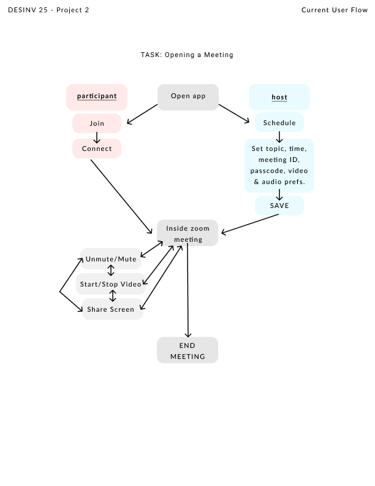
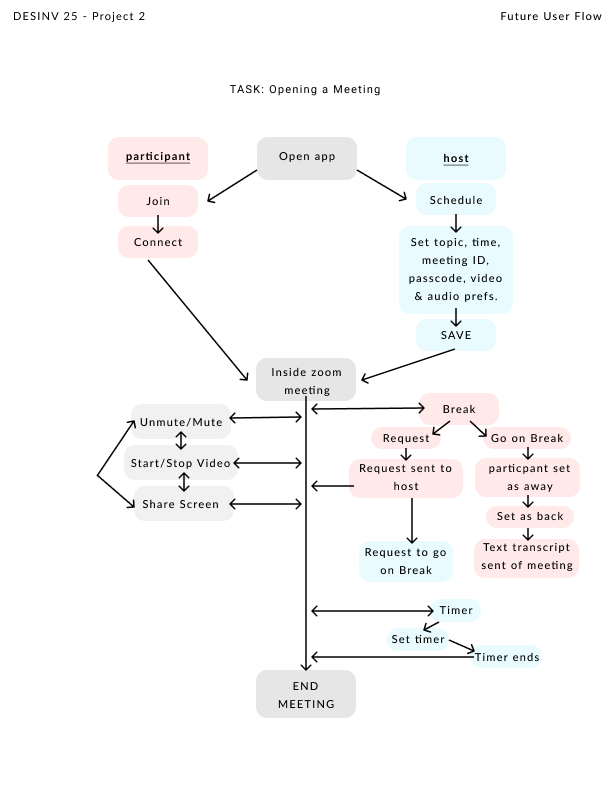
Red indicates the participant journey, blue the host, and gray shared actions. The right diagram shows the break feature woven into the existing flow.
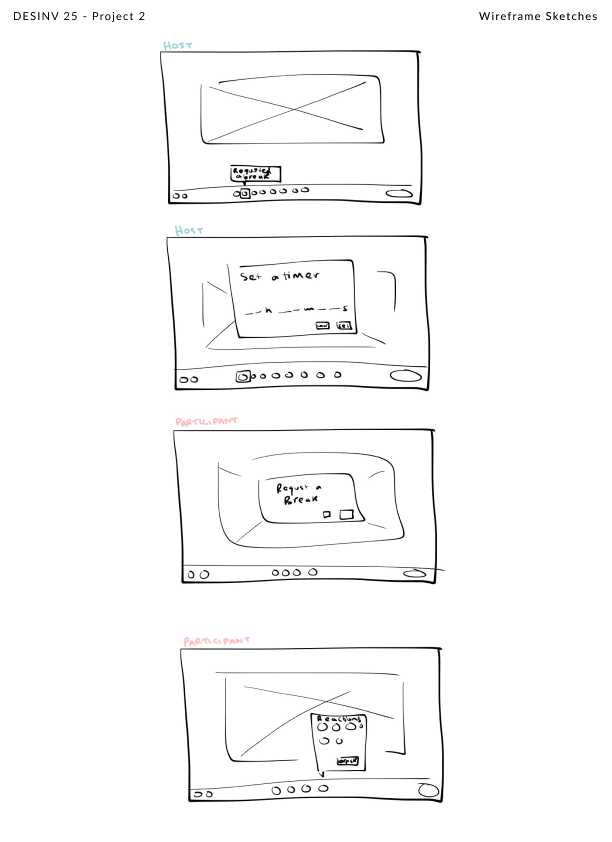
user testing
I brought my original interviewees back to test the wireframes and user flow. I walked through my vision with them and gathered feedback on how they'd interact with the new features.
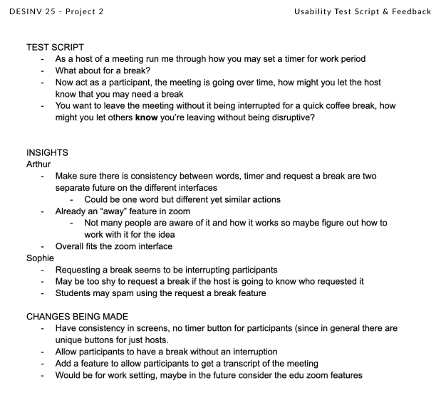
prototypes
Low-fi wireframe prototypes built in Figma, leading into the final high-fi screens.
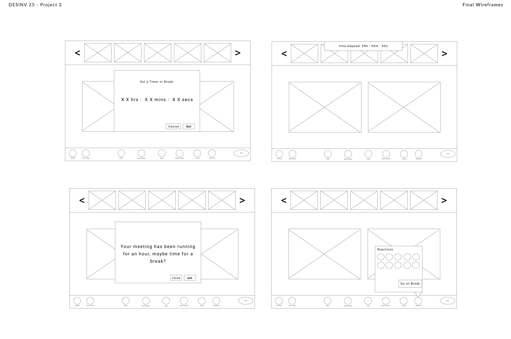
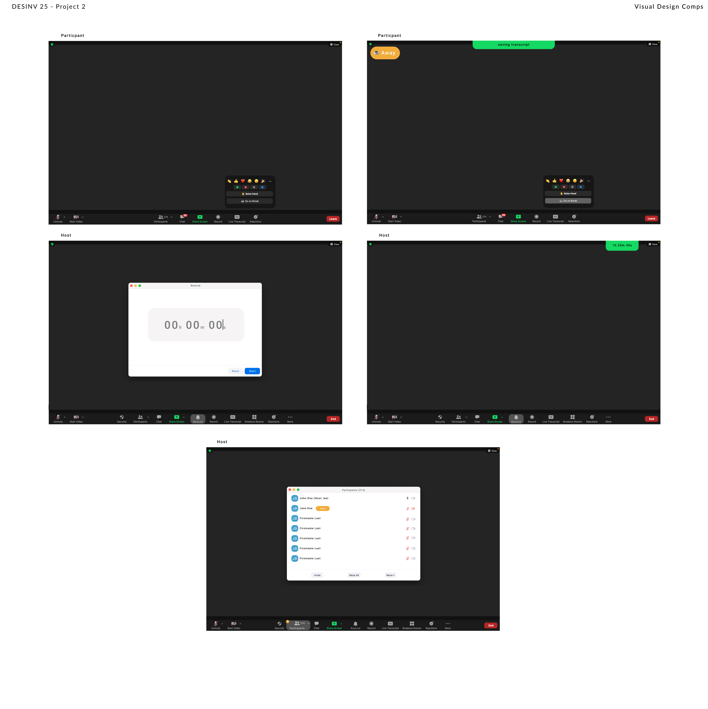
final outcome
Five final screens showcasing the break feature for both participants and hosts.
participant views
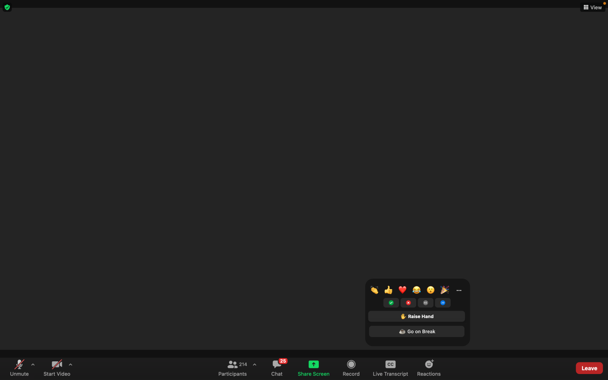
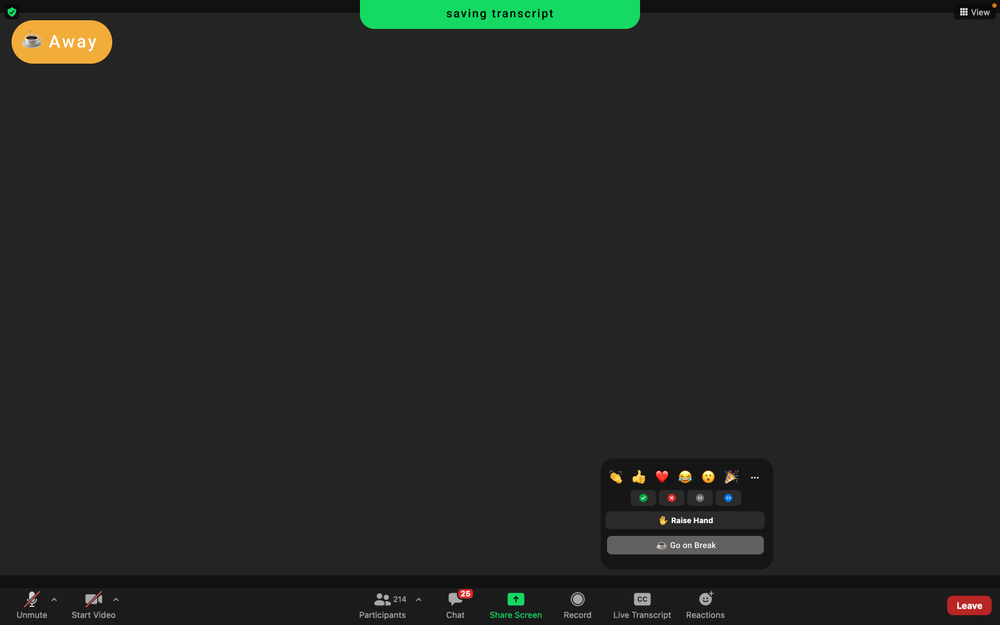
host views
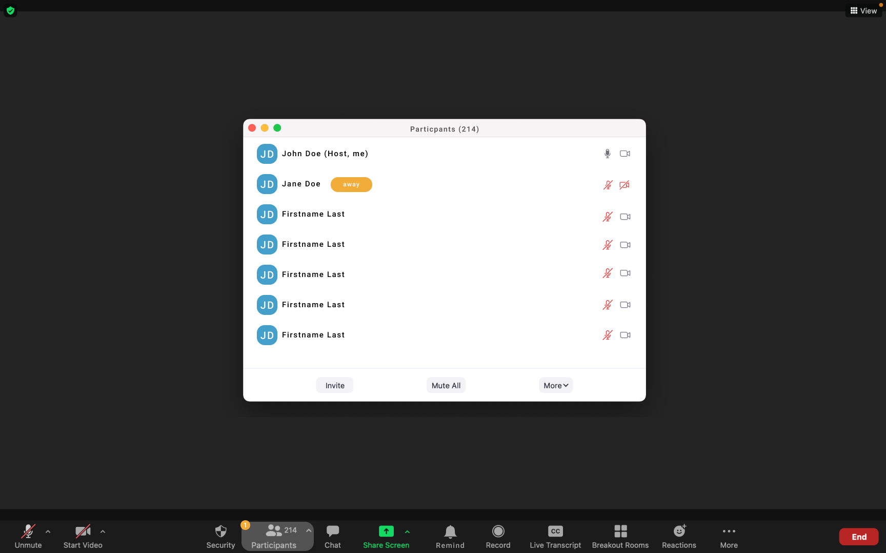
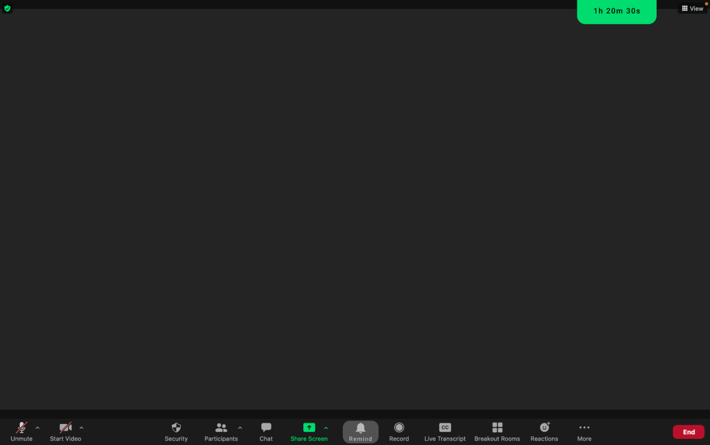
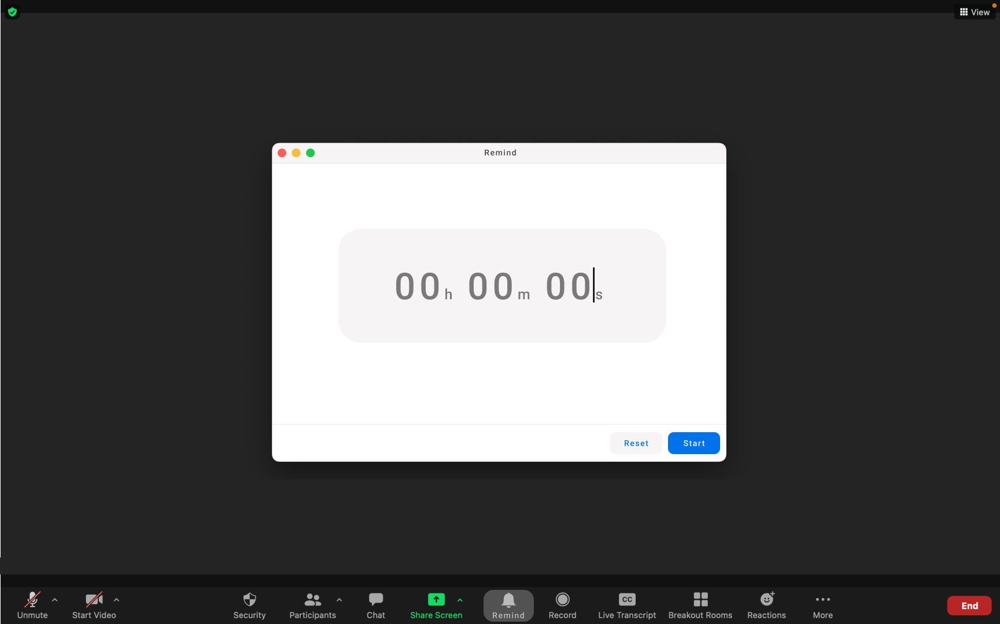
reflection
This was my first time redesigning an existing product — one I was using daily, even in the class itself. I had a lot of fun with it. If I revisited this project I'd interview more people (4–8 users) to build a richer persona and explore a wider range of features. More testing rounds would also strengthen the final result.